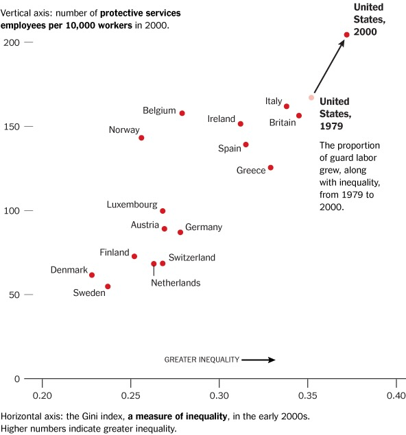
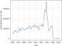
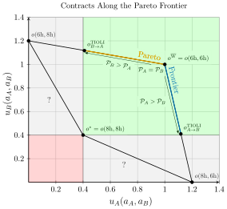

source("../dsan-globals/_globals.r")Week 11: Fear and Loathing on the Pareto Frontier
DSAN 5450: Data Ethics and Policy
Spring 2026, Georgetown University
Class Sessions
Schedule
| Start | End | Topic | |
|---|---|---|---|
| Lecture | 3:30pm | 4:00pm | A Whirlwind Tour of Prisoners’ Dilemmas |
| 4:00pm | 4:50pm | Policy Interventions: Transforming Prisoners’ Dilemmas into Assurance/Invisible Hand Games | |
| Break! | 5:00pm | 5:10pm | |
| 5:10pm | 6:00pm | “Inverse Fairness”(!): Machine-Learning What Policies Value |
Where We Left Off…
Prisoners’ Dilemma feels like a silly math/econ problem at first… then you get brainwashed by pol econ PhD and suddenly see it at the “core” of 95% of global issues
\[ \DeclareMathOperator*{\argmax}{argmax} \DeclareMathOperator*{\argmin}{argmin} \newcommand{\bigexp}[1]{\exp\mkern-4mu\left[ #1 \right]} \newcommand{\bigexpect}[1]{\mathbb{E}\mkern-4mu \left[ #1 \right]} \newcommand{\definedas}{\overset{\small\text{def}}{=}} \newcommand{\definedalign}{\overset{\phantom{\text{defn}}}{=}} \newcommand{\eqeventual}{\overset{\text{eventually}}{=}} \newcommand{\Err}{\text{Err}} \newcommand{\expect}[1]{\mathbb{E}[#1]} \newcommand{\expectsq}[1]{\mathbb{E}^2[#1]} \newcommand{\fw}[1]{\texttt{#1}} \newcommand{\given}{\mid} \newcommand{\green}[1]{\color{green}{#1}} \newcommand{\heads}{\outcome{heads}} \newcommand{\iid}{\overset{\text{\small{iid}}}{\sim}} \newcommand{\lik}{\mathcal{L}} \newcommand{\loglik}{\ell} \DeclareMathOperator*{\maximize}{maximize} \DeclareMathOperator*{\minimize}{minimize} \newcommand{\mle}{\textsf{ML}} \newcommand{\nimplies}{\;\not\!\!\!\!\implies} \newcommand{\orange}[1]{\color{orange}{#1}} \newcommand{\outcome}[1]{\textsf{#1}} \newcommand{\param}[1]{{\color{purple} #1}} \newcommand{\pgsamplespace}{\{\green{1},\green{2},\green{3},\purp{4},\purp{5},\purp{6}\}} \newcommand{\pedge}[2]{\require{enclose}\enclose{circle}{~{#1}~} \rightarrow \; \enclose{circle}{\kern.01em {#2}~\kern.01em}} \newcommand{\pnode}[1]{\require{enclose}\enclose{circle}{\kern.1em {#1} \kern.1em}} \newcommand{\ponode}[1]{\require{enclose}\enclose{box}[background=lightgray]{{#1}}} \newcommand{\pnodesp}[1]{\require{enclose}\enclose{circle}{~{#1}~}} \newcommand{\purp}[1]{\color{purple}{#1}} \newcommand{\sign}{\text{Sign}} \newcommand{\spacecap}{\; \cap \;} \newcommand{\spacewedge}{\; \wedge \;} \newcommand{\tails}{\outcome{tails}} \newcommand{\Var}[1]{\text{Var}[#1]} \newcommand{\bigVar}[1]{\text{Var}\mkern-4mu \left[ #1 \right]} \]


Fishers’ Dilemma (Our “Core” Prisoners’ Dilemma)
Single, unique Nash equilibrium, and it’s Pareto inferior
(looming in background: unsustainable if total hours/day > 14)
The “Iterated Elimination” Result
| \(\color{#e69f00}B\) | ||||||
| Fish 6h | Fish 8h | |||||
| \(\color{#0072b2}A\) | Fish 6h | \(\color{#0072b2}\cancel{1}\color{black}, \,\) | \(\color{#e69f00}\cancel{1}\) | \(\color{#0072b2}\cancel{0}\color{black},\) | \(\color{#e69f00}\boxed{\mathbf{1.2}}\) | |
| Fish 8h | \(\color{#0072b2}\boxed{\color{#0072b2}\mathbf{1.2}}\color{black}, \,\) | \(\color{#e69f00}\cancel{0}\) | \(\color{#0072b2}\boxed{\color{#0072b2}\mathbf{0.4}}\color{black},\) | \(\color{#009e73}\boxed{\color{#e69f00}\mathbf{0.4}}\) | ||
Boxes = Best Responses:
\[ \begin{aligned} {\color{#0072b2}\text{BR}_A}({\color{#e69f00}\overset{B}{6\textrm{h}}}) &= {\color{#0072b2}8\textrm{h}}, \; {\color{#0072b2}\text{BR}_A}({\color{#e69f00}\overset{B}{8\textrm{h}}}) = {\color{#0072b2}8\textrm{h}} \\ {\color{#e69f00}\text{BR}_B}( {\color{#0072b2}\underset{A}{6\textrm{h}}} ) &= {\color{#e69f00}8\textrm{h}}, \; {\color{#e69f00}\text{BR}_B}( {\color{#0072b2}\underset{A}{8\textrm{h}}} ) = {\color{#e69f00}8\textrm{h}} \end{aligned} \]
Best response is always \(\text{8h}\), no matter what other player does!
\[ \begin{aligned} \implies &{\color{#0072b2}\mathbb{E}[u_A]} = {\color{#e69f00}\mathbb{E}[u_B]} = 0.4 \text{ for now}, \\ &\leadsto \; ? \text{ once fishery collapses (}\textstyle\sum\text{hrs} = 16\text{)} \end{aligned} \]
Pareto Dominance

Policy Intervention : Allow Contracts
\(\leadsto\) Operationalizing Power as “second best” outside option(s)
- Equally good outside options \(\implies\) can contract to Pareto-optimal point \(o^P\)
- \(B\) has better outside options \(\implies\) can make take it or leave it offer to \(A\):
- “You (\(A\)) fish 6 hrs all the time. I (\(B\)) fish 6 hrs 41% of time, 8 hrs otherwise”
Slightly better for \(A\) \(\implies\) \(A\) accepts:
\[ \begin{aligned} \mathbb{E}[u_A(a_A = \textsf{Reject})] &= \overset{\text{STTP}}{\boxed{0.4}} \; \text{ (prev slide) } \overset{\text{LTTP}}{\color{#e69f00}\boxed{\color{black}\leadsto -\infty}} \\ \mathbb{E}[u_A(a_A = \textsf{Accept})] &= 0.41\cdot 1 + 0.59 \cdot 0 = \boxed{0.41} \\ \mathbb{E}[u_B(a_A = \textsf{Reject})] &= \boxed{0.4} \; \text{ (prev slide) } {\color{#e69f00}\boxed{\color{black}\leadsto 0.39}} \\ \mathbb{E}[u_B(a_A = \textsf{Accept})] &= 0.41\cdot 1 + 0.59 \cdot 1.2 = \boxed{1.118} \end{aligned} \]
\(B\)’s offer = credible threat in both short and long term; same threat from \(A\) would not be credible (\(B\) knows \(A\) would eventually die: \(u_A \leadsto -\infty\))
HW4: observe policy outcome \(o^{\text{TIOLI}}_{B \rightarrow A}\) \(\Leftrightarrow\) social welfare weights \(\omega_B > \omega_A\)

Policy Intervention : Fines for Overfishing
\(\leadsto\) Weber’s descriptive definition of “The State”: Agent with Monopoly on Legal Use of Force (Weber 1919) (remember him?)
- Notice: Previous “intervention” was actually self-enforcing! However, outcome was…
- Determined entirely by asymmetric power, and
- Took no account of anyone in society besides two fishers!
- (Thought experiment: if both had “good” outside options, best for them could be fish cod to extinction then move on to “second-best” option \(u = 0.4 \leadsto 0.39\))
- If we identify [asymmetry of power \(\leadsto\) asymmetry of outcomes] as harm bc unfair (reflective equilibrium), one “follow-up” policy intervention is make \(A\)’s outside options better (welfare, job retraining, etc… but who sets these up?)
- If we identify [ecological damage] as harm, this forms independent “dimension” of policy analysis: if coastal waters are “public good” of Canada, may need some sort of agent representing Canada, to govern use of resource 🤔 some sort of… representative government 🤔 with power to issue fines / ban fishing 🤔
…Fines are “Easy” from Economic Perspective
An economic transaction is a solved political problem. Economics has gained the title “Queen of the Social Sciences” by choosing solved political problems as its domain. (Lerner 1972)
- If we assume a “well-functioning” state—power to enforce fines, no corruption, etc.—and that this state has “agreed” to use fines to resolve the issue…
- Calculation of “optimal fines” is a “solved” problem in economics (like encryption in CS): A Pigouvian tax just fines agent \(B\) an amount equal to the externality(!) their defection imposes on \(A\), then redistributes this collected fine back to \(A\):
| \(\color{#e69f00}B\) | ||||||
| Fish 6h | Fish 8h | |||||
| \(\color{#0072b2}A\) | Fish 6h | \(\color{#0072b2}\cancel{1}\color{black}, \,\) | \(\color{#e69f00}\cancel{1}\) | \(\underset{(+1)}{\color{#0072b2}\cancel{0}\color{black}}\underset{\; \leftarrow\vphantom{(+1)}}{,}\) | \(\underset{(-1)}{\color{#e69f00}\boxed{\color{#e69f00}\mathbf{1.2}}}\) | |
| Fish 8h | \(\underset{(-1)}{\color{#0072b2}\boxed{\color{#0072b2}\mathbf{1.2}}}\color{black}\underset{\rightarrow\vphantom{(+1)}}{,} \,\) | \(\underset{(+1)}{\color{#e69f00}\cancel{0}}\) | \(\color{#0072b2}\boxed{\mathbf{0.4}}\color{black},\) | \(\color{#e69f00}\boxed{\mathbf{0.4}}\) | ||
\(\leadsto\)
New game with tax applied
| \(\color{#e69f00}B\) | ||||||
| Fish 6h | Fish 8h | |||||
| \(\color{#0072b2}A\) | Fish 6h | \(\color{#0072b2}\boxed{\mathbf{1}}\color{black}, \,\) | \(\color{#e69f00}\boxed{\mathbf{1}}\) | \(\color{#0072b2}\boxed{\mathbf{1}}\color{black},\) | \(\color{#e69f00}\cancel{0.2}\) | |
| Fish 8h | \(\color{#0072b2}\cancel{0.2}, \,\) | \(\color{#e69f00}\boxed{\mathbf{1}}\) | \(\color{#0072b2}\cancel{0.4}\color{black},\) | \(\color{#e69f00}\cancel{0.4}\) | ||
Policy Interventions: Fish Dilemmas \(\leadsto\) Assurance Games
- To “escape” prisoners’ dilemma, we had to change the rules of the game (permanently: a one-time fine would not work)
- Fishers’ Dilemma:
- No institutions: \(a_A, a_B \in \{6\text{ hr}, 8\text{ hr}\}\)
- Institutions (courts or social norms): \(\{\text{Accept}, \text{Reject}\}\)
- Driving “game” (two cars pull up at intersection):
- No institutions: \(a_A, a_B \in \{\text{Stop}, \text{Drive}\}\)
- Institutions (stoplights installed by govt or community agreement): \(a_A, a_B \in \{\text{Obey Light}, \text{Run Light}\}\)
- If policy issue well-modeled by Assurance Game, however, may only need to “nudge” (one-time intervention) \(\leadsto\) new permanent Pareto-optimal equilibrium (Nash \(\implies\) self-enforcing!)
Assurance Game
- Multiple equilibria; the particular outcome we observe is a function of history (path dependency)
- Drive-on-left vs. drive-on-right: Assurance game where neither equilibrium Pareto-dominates other option
- Swedish Dagen H: Nudge from \(o^*_{\textsf{L}} = o(\textsf{L},\textsf{L})\) to \(o^*_{\textsf{R}} = o(\textsf{R},\textsf{R})\)
- Either eq is self-reinforcing! (Unless you… like dying)
- QWERTY vs. DVORAK / Palanpur farmers: Assurance game where observed equilibrium Pareto inferior
| \(\color{#e69f00}B\) | |||
| Early | Late | ||
| \(\color{#0072b2}A\) | Early | \(\color{#0072b2}\boxed{\mathbf{4}}\color{black}{,} \color{#e69f00}\boxed{\mathbf{4}}\) | \(\color{#0072b2}\cancel{0}\color{black}{,} \color{#e69f00}\cancel{3}\) |
| Late | \(\color{#0072b2}\cancel{3}\color{black}{,} \color{#e69f00}\cancel{0}\) | \(\color{#0072b2}\boxed{\mathbf{2}}\color{black}{,} \color{#e69f00}\boxed{\mathbf{2}}\) | |
Invisible Hand Game
- Single, unique Nash equilibrium, and it’s Pareto efficient
- \(\Rightarrow\) Acting in self interest \(\leadsto\) best possible outcome
It is not from the benevolence of the butcher, the brewer, or the baker that we expect our meal, but from their regard to their own interest (Smith 1776)
| \(\color{#e69f00}B\) | ||||
| Corn | Taro | |||
| \(\color{#0072b2}A\) | Corn | \(\color{#0072b2}\cancel{2}\color{black}{,} \color{#e69f00}\boxed{\mathbf{4}}\) | \(\color{#0072b2}\boxed{\mathbf{4}}\color{black}{,} \color{#e69f00}\cancel{3}\) | |
| Taro | \(\color{#0072b2}\boxed{\mathbf{5}}\color{black}{,} \color{#e69f00}\boxed{\mathbf{5}}\) | \(\color{#0072b2}\cancel{3}\color{black}{,} \color{#e69f00}\cancel{2}\) | ||
- Wealth of Nations SPOILER: The wealth comes from division of labor
and also dumbleydore, and semperus snake, and even poor ron the weasel, who never deserved such a fate
[…I am once again reminding you that] An economic transaction is a solved political problem. Economics gained the title “Queen of the Social Sciences” by choosing solved political problems as its domain
References
Lerner, Abba P. 1972. “The Economics and Politics of Consumer Sovereignty.” The American Economic Review 62 (1/2): 258–66. https://www.jstor.org/stable/1821551.
Smith, Adam. 1776. The Wealth of Nations. Random House Publishing Group. https://books.google.com?id=Anwp7vTR1usC.
Weber, Max. 1919. The Vocation Lectures. Hackett Publishing. https://books.google.com?id=V6t5EAAAQBAJ.